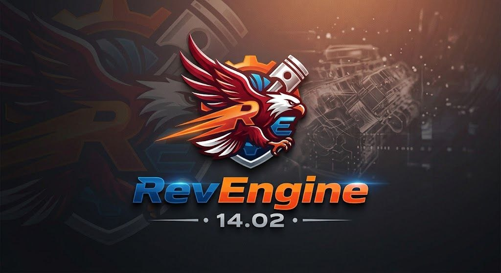

NanospeedGamer
Verificação de inicialização
Verificando arquivos do site...
- CSS: aguardando
- Animação: aguardando
- Inicializador: verificando
Esta tela não inicia automaticamente a rotina de kernel. O arquivo launch.js referenciado pela versão anterior não existe neste pacote. A compatibilidade do firmware também precisa ser confirmada antes de qualquer execução.